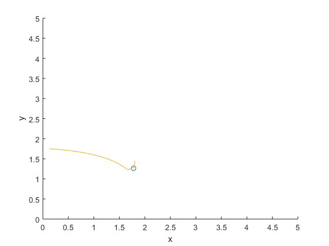
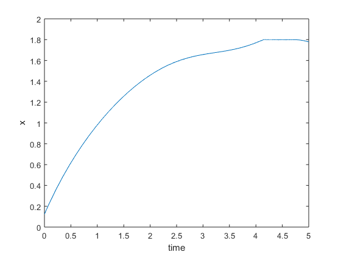
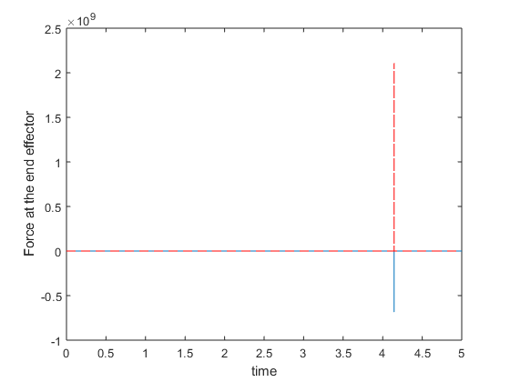
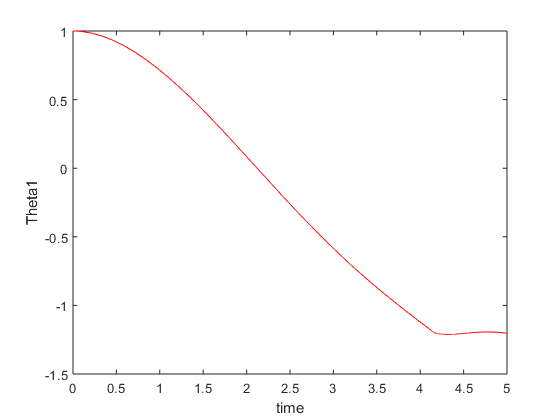
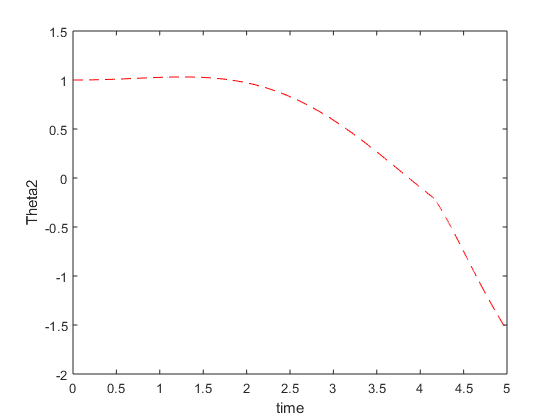
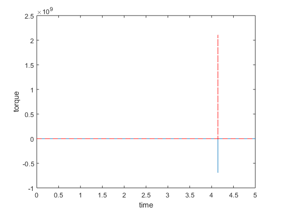

Final Exam
By- Aishwary Jagetia
Contents
Notations: For a given variable, x, dx is its time derivative, ddx is
2nd-order derivative.
clc clear all; close all; % the following parameters for the arm global l1 l2 I1=10; I2=10; m1=5; r1=.5; m2=5; r2=.5; l1=1; l2=1; g=9.8;
specify your initial and final condition.
qi = [1.0;1.0];
X = ForwardKinematics(qi(1),qi(2));
x0= [qi(1),qi(2),0,0,X(1),X(2)];
tf=5;
global torque Force
torque = [];
Implement the Iterative Learning control for set point tracking.
options = odeset('RelTol',1e-4,'AbsTol',[1e-4, 1e-4, 1e-4, 1e-4, 1e-4, 1e-4]); [T,X] = ode45(@(t,x) ComplianceControl(t,x),[0 tf],x0, options); figure('Name','End effector position Compliance Control'); comet(X(:,5), X(:,6)); xlabel('x') ylabel('y') axis([0 5 0 5]) figure('Name','End effector position Compliance Control'); plot(T, X(:,5)); xlabel('time') ylabel('x') figure('Name','Reaction Force: Compliance Control'); plot(T, Force(1,1:size(T,1)),'-'); hold on plot(T, Force(2,1:size(T,1)),'r--'); xlabel('time') ylabel('Force at the end effector') figure('Name','Theta_1 under Compliance Control'); plot(T, X(:,1),'r-'); xlabel('time') ylabel('Theta1') figure('Name','Theta_2 under Compliance Control'); plot(T, X(:,2),'r--'); xlabel('time') ylabel('Theta2') figure('Name','Torque: Compliance Control'); plot(T, torque(1,1:size(T,1)),'-'); hold on plot(T, torque(2,1:size(T,1)),'r--'); xlabel('time') ylabel('torque') hold off torque=[];
Compliance Control
function dx = ComplianceControl(t,x) Xd = [2.0;0.5]; % Desired end effector position Xe = x(5:6,1); % Current end effector position theta=x(1:2,1); % [x1;x2]=[x(1);x(2)] dtheta=x(3:4,1); % [x1_dot;x2_dot]=[x(3);x(4)] global l1 l2 I1=10; I2 = 10; m1=5; r1=.5; m2=5; r2=.5; l1=1; l2=1; g=9.8; % we compute the parameters in the dynamic model a = I1+I2+m1*r1^2+ m2*(l1^2+ r2^2); b = m2*l1*r2; d = I2+ m2*r2^2; global M C J he M = [a+2*b*cos(x(2)), d+b*cos(x(2)); d+b*cos(x(2)), d]; C = [-b*sin(x(2))*x(4), -b*sin(x(2))*(x(3)+x(4)); b*sin(x(2))*x(3),0]; invM = inv(M); invMC= inv(M)*C; J = getJacobian(theta(1),theta(2)); % Current Jacobian tau = Controler(Xd,Xe,theta,dtheta); global torque torque = [torque, tau]; dx = zeros(6,1); dx(1)= x(3); %dtheta1 dx(2)= x(4); %dtheta2 dx(3:4) = -invMC* x(3:4) + invM*tau - invM*(transpose(J)*he); dx(5:6)= J*dx(3:4); end function tau = Controler(Xd,Xe,theta,dtheta) global he Force Xr = [1.8; 0]; % Wall location Kd = [6 0; 0 4]; % Kd makes sure that the tracking performance is optimum and it shows % how jerky the system is. Here we have kept x higher than y to control % the system in x direction. Therefore Kd is small where contact forces % are low. Bd = [1 0; 0 1]; % Bd is the damping coef which takes care of transient behaviour which % smooths the system and also controls the rate aslo K = [1000 0; 0 1000]; if (Xe(1) >= Xr(1)) he = K*(Xr - Xe); else he = [0; 0]; end Force = [Force, he]; P_e = Xd - Xe; % Position error global J tau = J.'*(Kd*P_e - Bd*J*dtheta) + he; end function [qd] = InverseKinematics(x, y) global l1 l2 q2 = acos((x*x + y*y - l1*l1 - l2*l2)/(2*l1*l2)); q1 = atan2(y, x) - atan2((l2*sin(q2)), (l1 + l2*cos(q2))); qd = [q1;q2;]; end function [X] = ForwardKinematics(q1, q2) global l1 l2 x = l1*cos(q1) + l2*cos(q1 + q2); y = l1*sin(q1) + l2*sin(q1 + q2); X = [x;y;]; end function [J] = getJacobian(q1, q2) global l1 l2 j11 = -l1*sin(q1) - l2*sin(q1+q2); j12 = -l2*sin(q1+q2); j21 = l1*cos(q1) + l2*cos(q1+q2); j22 = l2*cos(q1+q2); J = [j11, j12; j21, j22]; end     